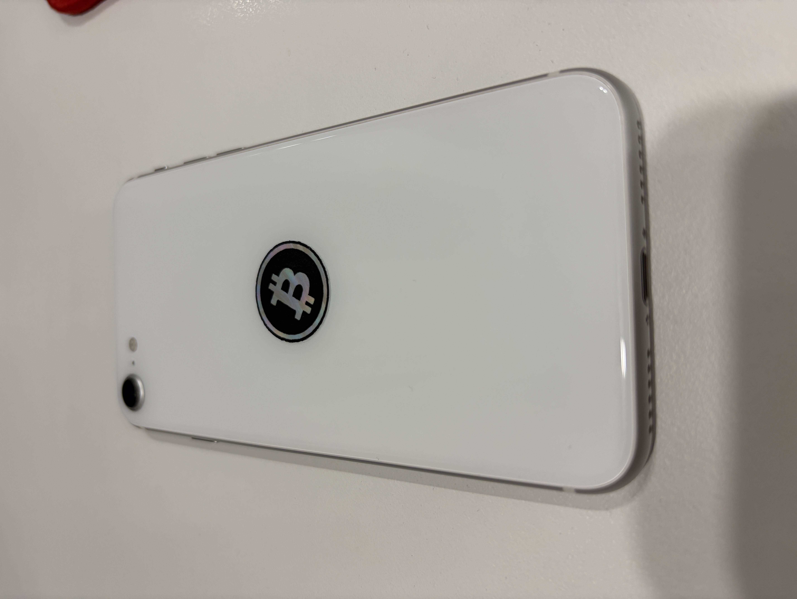

드디어 서명용 아이폰을 만들기 시작했다.
예전에 사놓고 방치해뒀던 '코코넛볼트'(아이폰용 콜드월렛 앱)를 이제야 설치했다. 산 지가 언젠데 이제서야 뜯어보다니, 역시 인간은 마감이 있어야 움직이는 동물인가 보다.

이 흰둥이가 오늘부터 서명 전용 기기다. 뒤에 비트코인 마크 스티커 하나 붙였다고 갑자기 '그냥 남는 폰'에서 '금고'로 승격된 기분이다. (물론 마음가짐 차이지만, 원래 의식이 반이다.)
사실 이 오래된 핸드폰, 예전엔 와치온리 전용폰으로 쓰고 있었다. 평소 쓰는 폰에 와치온리 앱 같은 비트코인 관련 앱들을 주렁주렁 달고 다니다가, 그걸 누군가 우연히 보게 되는 끔찍한 상황을 상상했던 거다. 큰 재산을 그렇게 노출시킬 순 없는 일 아니겠는가.
그 폰을 지금은 (임시) 에어갭 콜드월렛으로 쓰고 있다. 다만 이 폰을 100% 신뢰하진 않는다. 그래서 500만원 미만의 소액만 넣어두고, 휴대가 용이한 편의성 위주로 굴려볼 생각이다.
1. 오프라인 유지한 채 QR로 옮기려다가
와이파이·블루투스를 끈 채로, 예전에 만들어둔 QR SENDER/RECEIVER로 문서 하나를 옮겨보려고 했다. 완전 에어갭, 이론상 완벽한 계획이었다.
근데 카메라 권한 창부터가 안 뜬다. 어라?
알고 보니 원인이 좀 웃겼다. '읽기 목록'으로 저장해서 오프라인으로 열어두면, 브라우저 입장에선 이게 진짜 그 사이트가 아니라 그냥 스냅샷 박제본 취급을 하더라. 그래서 카메라 같은 민감한 기능은 애초에 막혀 있었던 거다.
결국 정식으로 오프라인 캐싱하는 방식(서비스워커)으로 뜯어고치고 나서야 제대로 됐다. 에어갭 노트북 만들 때도 이래저래 걸리는 게 많더니, 서명용 아이폰도 첫날부터 순탄하진 않구나 싶었다.
2. 앞으로 계획
일단 당분간은 와이파이·블루투스를 꺼둔 채로 이 폰을 계속 굴려볼 생각이다. 진짜 실사용에 문제가 없는지 좀 지켜보려고.
앞으로 콜드월렛과 와치온리 전용을 오가며 쓸지, 아니면 와이파이·블루투스·마이크·스피커·NFC 안테나를 다 제거하고 쓸지는 아직 나도 모르겠다.
말은 이렇게 태연하게 쓰고 있지만, 사실 안테나 제거는 제정신인가 싶기도 하다. 근데 어쩌겠나, 이미 노트북도 한 번 뜯어봤는데 폰이라고 못 뜯을 이유가 없지 않은가.
어쨌든 최고의 장난감임은 부정할 순 없겠군.